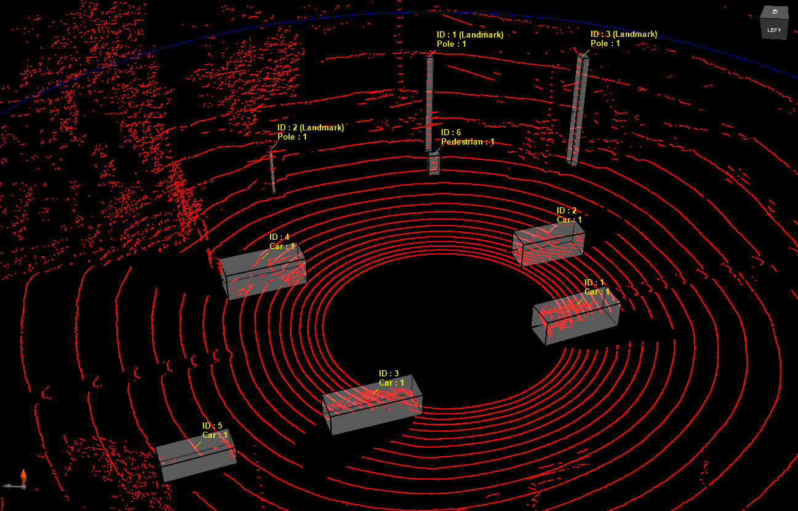

Hybrid 3D Object Detection on KITTI

This project implements a hybrid 3D object detection pipeline that combines Python-based deep learning inference with a high-performance C++ evaluation engine. PointPillars (via OpenPCDet) runs inference on KITTI LiDAR point clouds, and a custom C++ backend computes detection metrics against ground truth using oriented bounding box IoU in Bird's Eye View.
The goal was to bridge the gap between a research-oriented inference framework and a production-grade evaluation pipeline, with particular focus on geometric accuracy, coordinate frame handling, and real-time 3D visualization.
Architecture
The system is split into two stages. The Python stage handles neural network inference — loading point clouds, running PointPillars through OpenPCDet, and exporting per-frame predictions as JSON. The C++ stage then takes over: it parses KITTI ground truth labels and calibration files, transforms bounding boxes from the camera frame to the LiDAR frame, performs greedy IoU-based matching between predictions and ground truth, and computes precision, recall, and AP metrics.
↓
[ C++ Engine ] KITTI Loader → Transformer (cam → LiDAR) → Greedy IoU Matcher → Metrics (P / R / AP)
↓
[ PCL Visualizer ] Red = Ground Truth · Green = Predictions
Technical Challenges
- Coordinate Frame Alignment: KITTI ground truth is stored in the camera frame, while PointPillars outputs predictions
in the LiDAR frame. Implemented a robust C++ transformer using calibration matrices:
T_lidar = inv(Tr_velo_to_cam) × inv(R0_rect). A subtle sign error in the rotation inversion caused a ~15° yaw offset that was only caught through visual debugging in the PCL viewer. - BEV Oriented Bounding Box IoU: Standard axis-aligned IoU doesn't work for rotated 3D boxes. Implemented the Sutherland–Hodgman polygon clipping algorithm to compute exact intersection areas between oriented rectangles in Bird's Eye View projection.
- Greedy Matching Strategy: Designed a greedy matching algorithm that pairs predictions to ground truth by descending confidence score, preventing duplicate assignments while maximizing true positive count.
- Cross-Language Pipeline: Bridging Python inference and C++ evaluation required a clean JSON interface.
Used
nlohmann_jsonfor parsing and defined a strict schema for prediction files to ensure compatibility.
Stack
| Layer | Technology |
|---|---|
| Languages | C++20, Python 3.10 |
| Detection | PointPillars via OpenPCDet |
| Deep Learning | PyTorch 2.1.0 + CUDA 12.1 |
| Geometry | Eigen3, spconv-cu121 |
| Point Cloud | PCL 1.10, Open3D |
| Serialization | nlohmann_json |
| Dataset | KITTI 3D Object Detection |
Usage
# Step 1 — Run PointPillars inference
conda activate kittienv
python scripts/kitti_inference.py \
--data_path data/kitti/velodyne \
--cfg_file configs/pointpillar_kitti.yaml \
--ckpt checkpoints/pointpillar_7728.pth \
--output_dir data/kitti/predictions
# Step 2 — Build & run C++ evaluation
mkdir -p build && cd build
cmake .. && make -j$(nproc)
./kitti_eval \
--data_path data/kitti \
--pred_path data/kitti/predictions \
--score_thresh 0.5 \
--iou_thresh 0.5Results
The pipeline achieved 71% precision and 88% recall on the KITTI mini-split (Car class, BEV IoU ≥ 0.5). The PCL visualizer confirmed accurate box alignment between predictions (green) and ground truth (red) across all test frames.
| Metric | Value | Description |
|---|---|---|
| Precision | 71% | TP / (TP + FP) — global over 50 frames |
| Recall | 88% | TP / (TP + FN) — global over 50 frames |
| IoU Threshold | 0.5 | KITTI standard for Car class |
| Difficulty | AP (PointPillars official) |
|---|---|
| Easy | 87.75 |
| Moderate | 77.28 |
| Hard | 72.84 |
Key takeaway: the biggest source of error was not the neural network itself but the coordinate transformation chain. Careful geometric validation through visualization was essential to catch subtle calibration issues that would have silently degraded all downstream metrics.